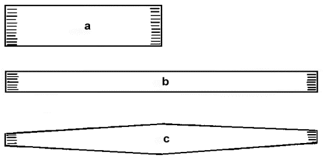

Teoría de Vuelo para Pilotos de Planeador
Stafford Allen
Capítulo VII
CLASES DE PLANEADORES
EL PRIMARIO
Comenzando
por lo primero, consideraremos el planeador primario. Se trata de una criatura que está
prácticamente extinguida. No tenía fuselaje sino un simple marco de madera o, algunas
veces, de tubos de acero que contenían el asiento del piloto y la unidad de cola, y
además soportaba un ala rectangular muy simple montada bien por encima de la cabeza del
piloto. Esta ala generalmente se encontraba asegurada al fuselaje por arriba y abajo,
mediante cables. La parte del marco que hacia de fuselaje situada por encima del ala, por
lo general se hallaba forrada con tela, formando una Y invertida. Los controles eran por
demás convencionales pero extremadamente simples; en realidad, los cables de control eran
visibles en toda su extensión. La característica fundamental era la simplicidad, poco
peso y bajo costo, combinados con una gran resistencia. La función del primario era
enseñar a la gente a volar por el método de hacerlo solo desde el primer momento. En
consecuencia, debía tener la capacidad de soportar una gran cantidad de malos tratos sin
estropearse. Por lo tanto, eran indicadas las alas sujetas con cables desde que un cable
dañado es mucho más fácil y barato de reemplazar que un montante. Además, en el caso
de un accidente menor el piloto estaba mucho más seguro sin un fuselaje a su alrededor,
ya que no había peligro proveniente de astillas de madera.
En vuelo
el primario era extraordinariamente estable en los tres ejes. Tenía que serlo desde que
era volado por pilotos prácticamente sin experiencia. Esta es la razón de la cola
anormalmente grande y el plano vertical a que hicimos referencia, ubicado sobre el ala.
Esta gran estabilidad, por supuesto, tenía que pagar un precio y ese precio eran
controles pesados y lentos. Los controles se hallaban dispuestos en forma accesible. El
piloto tenía un amplio control sobre el vuelo normal y le era extremadamente difícil
llevar al planeador a una situación anormal. Muchos primarios bien diseñados eran
completamente imposibles de hacer entrar en tirabuzón.
El ala era
de forma rectangular. Todas las costillas eran de la misma forma y la envergadura era
relativamente pequeña. Ambos elementos permitían obtener un ala liviana y barata.
El
rendimiento del primario, como podría esperarse, era muy pobre. El ángulo de planeo era
del orden de 1 en 8 o 10 y la caída mínima, de alrededor de 1,5 metros por segundo. Sin
embargo, cumplía su misión en forma admirable y permitía volar lentamente, barato y con
seguridad. Tal vez la peor crítica que podía hacerse al pobre primario es que resultaba
demasiado estable y fácil de volar. Aunque estas cualidades eran necesarias, tendían a
producir hábitos de pilotaje chapuceros en pilotos que habían hecho su aprendizaje en
primarios, hábitos que a menudo eran difíciles de eliminar más tarde.
Algunos
primarios habían sido dotados de carenado, es decir, una pequeña cabina en forma de
huevo para permitir un mejor flujo del aire en la zona del piloto y el fuselaje. Mientras
esto no ayudaba nada a modificar las malas condiciones del primario, tenía un efecto muy
marcado en la performance. Los primarios de este tipo fueron usados durante muchos años
como máquinas de entrenamiento elementales para el vuelo a vela en lugares donde había
una buena pendiente para vuelo en ladera.
Los
primarios tenían una curva L/D con mucha pendiente y esto significa que sólo poseían
una muy pequeña gama de velocidades donde podía encontrarse alguna eficiencia. Por
encima y por debajo de esta velocidad el ángulo de planeo se asemejaba al de un ladrillo.
Ejemplos de primario fueron el Dagling, Eon Primario y los alemanes Zogling y Escuela 38.
EL INTERMEDIO
A
continuación, en cuanto a eficiencia, vienen los planeadores intermedios. Este es un
término muy vago que se aplica a una gama muy amplia de planeadores. Podemos afirmar que
cubre todos los planeadores que son suficientemente eficientes para volar a vela o
mantenerse y trepar en condiciones favorables, pero que no tienen una buena gama de
velocidades; en una palabra, que no tienen buena penetración. En
esta categoría se incluyen los biplazas Schweizer, Tutor y Specht, así como los
monoplazas Grunau Baby, Hütter y Swallow. En estos casos tenemos un verdadero fuselaje,
por lo general de forma simple, con costados planos, un ala muy sencilla soportada por
montantes y una apariencia por lo común mucho más aeronáutica que la de los primarios.
La diferencia más importante, sin embargo, es que el alargamiento del ala es mucho mayor
en los planeadores intermedios, y el ancho y espesor de las alas por lo general van
disminuyendo hacia los extremos. Nos referiremos a este tema del alargamiento más tarde
con mayor detalle.
Los
planeadores intermedios más eficientes tienen un ángulo de planeo del orden de 1 en 20 y
una velocidad mínima de descenso de alrededor de 0,70 a 1 metro por segundo. También
tienen una curva L/D muy pendiente, es decir, que son eficientes en una gama relativamente
pequeña de velocidades. Su respuesta a los movimientos de los controles es mucho más
rápida que la de los primarios y no son tan estables. Ello no quiere decir que sean
inestables; tienen, por supuesto, estabilidad positiva, pero la estabilidad no es excesiva
al punto de interferir en forma negativa con la rapidez y ligereza de los controles. Puede
afirmarse que un planeador intermedio eficiente como el Grunau Baby o el biplaza Sedbergh
hará cualquier cosa que pueda hacer un planeador de alta performance, excepto volar
velozmente.
Los
planeadores intermedios tienen en general una razonable carga alar, lo que les da una baja
velocidad de vuelo, pero habitualmente no tan baja como la de los primarios. Las alas
usualmente tienen un cierto alabeo en las puntas para disponer de un razonable control de
alerones cuando el aparato se encuentra al borde de la pérdida y los alerones, por lo
general, son del tipo diferencial para disminuir al mínimo la resistencia. También se
suele dotar a estas máquinas de una rueda central para el aterrizaje.
Ahora
bien: ¿Por qué, en la búsqueda de una mayor eficiencia debemos tratar de obtener un
mayor alargamiento? Para hallar la respuesta a esta pregunta debemos volver a los
principios elementales. Eficiencia o buen ángulo de planeo dependen, como hemos visto, de
la relación L/D del planeador. Cualquier cosa que reduce la resistencia sin reducir la
sustentación, o a la inversa, incrementa la sustentación sin incrementar la resistencia,
hará aumentar la relación L/D y el ángulo de planeo. Lo que ejerce mayor efecto en la
relación L/D es el ala. En los primeros capítulos observamos las alas y los perfiles
correspondientes a un corte lateral, pero esta no es toda la historia. Permítasenos ahora
echar un vistazo al ala de los planeadores, en planta.
Imagine un
planeador volando directamente hacia usted. Debido a la sustentación que produce, hay una
región de presión reducida sobre el ala y una región de presión incrementada debajo de
ella. En consecuencia, el aire tiende a escapar de debajo de las alas por los extremos y
dirigirse hacia la parte superior. Por supuesto, no puede lograrlo del todo, pero el
efecto es una deflexión del aire situado debajo de las alas, ligeramente hacia afuera y
una deflexión del aire que fluye sobre las alas, ligeramente hacia dentro. Este efecto es
mayor cerca de las puntas y menor en el medio del ala. Exactamente detrás del ala estas
tendencias hacia dentro y hacia fuera del aire se vuelven a encontrar y se juntan formando
un vórtice (una especie de remolino) que se desprende desde las puntas de las alas. La
energía que se desperdicia en estos vórtices proviene del mismo planeador y la
resistencia que producen se denomina resistencia inducida. Ahora,
desde que las puntas son las culpables principales de esta resistencia inducida, lo ideal
sería no tener puntas de alas. Nadie ha inventado hasta ahora una forma práctica de
construir un ala sin punta, pero podemos hacerla pequeña en comparación con la parte
media eficiente.

Figura 17 – Vórtices en puntas de ala
La figura
17 muestra la forma de tres alas de igual superficie.
Las superficies sombreadas
muestran la porción relativamente ineficiente. En la figura 17 a) el área sombreada constituye una
buena proporción del total del ala. En la figura 17 b) podemos apreciar la enorme
ventaja lograda mediante la
duplicación de la envergadura y la disminución de la cuerda (en realidad, duplicamos el
alargamiento). Ahora, las puntas son una pequeña proporción del ala y la resistencia
inducida es mucho menor. Aun lo podemos mejorar si damos a las alas una forma aguzada
(fig. 17 c), en la cual la porción de la punta ineficiente es muy pequeña y también lo
es la resistencia inducida.
Debemos
terminar estas consideraciones sobre la resistencia inducida con un elogio a los técnicos
en aerodinámica por esta magnífica simplificación en lo que es realmente un problema
muy complejo.
Por lo
tanto, si deseamos una buena eficiencia debemos disponer de una gran relación L/D y
únicamente podemos disponer de ella si mantenemos la resistencia inducida tan baja como
sea posible. Sólo podemos obtener esto utilizando un gran alargamiento. Naturalmente,
hay un límite para el alargamiento que podemos utilizar, porque a medida que hacemos las
alas más largas y estrechas, se hace más y más difícil construirlas fuertes y bastante
rígidas como para cumplir su tarea sin que sean excesivamente pesadas. La disminución
del ancho de las alas nos ayuda en este caso porque la sustentación se concentra más en
el medio y menos en las puntas, lo cual reduce la flexión de las mismas. El alabeo
produce el mismo resultado, excepto que si tratamos de volar invertidos con el planeador,
el alabeo se invierte y la sustentación se concentra en las puntas. Esta es una de las
razones por la cual está prohibido el vuelo invertido en casi todos los planeadores.
EL ALTOVELERO
El último
tipo de planeador que debemos considerar es el de alta performance o para vuelos de
distancia. En esta categoría entran los planeadores de perfil laminar como el Standard
Austria, Foka, Zefir, M 100, Ka 6, Vasama, Skylarks, Olympia 419 y 460, Ka 18, Eagles,
todos de madera (y los más modernos de plástico construidos principalmente en Alemania y
Polonia), los tipos más viejos con perfiles alares convencionales tales como el Sky,
Weihe, Gull IV, Kite II y muchos otros. Las competencias han mostrado que los tipos
laminares son considerablemente más eficientes. Cualquiera sea su eficiencia, todos estos
tipos tienen el mismo propósito, es decir, vuelos de distancia a alta velocidad, de tal
manera que podemos considerarlos como una clase. En todos los casos estas máquinas tienen
alas de gran envergadura y gran alargamiento para proporcionarles alta eficiencia. Las
secciones de ala son elegidas muy cuidadosamente para proporcionar una curva L/D tan chata
como sea posible, de tal manera que disponen de una gama de velocidades muy grande en las
cuales el planeador tiene un buen ángulo de planeo. En síntesis, decimos que estas
máquinas tienen buena penetración. Para
mantener la resistencia al mínimo los fuselajes por lo general son redondeados, muy
pulidos, de sección oval, y la cabina se encuentra integrada con una burbuja plástica.
Siempre disponen de frenos o spoilers y estos dispositivos también están siendo
incluidos en los planeadores intermedios. También y por lo general se incluye una rueda
central. Un recurso moderno son las ruedas retráctiles, que una vez entradas quedan
cubiertas con un buen carenado. Toda la máquina está perfilada al último grado a fin de
llevar la resistencia al mínimo.
Las
performances de estas máquinas llegan a ángulos de planeo entre 1 en 30 hasta 1 en 60,
combinadas con velocidades mínimas de descenso de alrededor de 0,60 metros por segundo
hasta menos de 0,50 metros por segundo. Las cargas alares son más altas que las de los
planeadores intermedios e inclusive se pueden aumentar con lastre de agua, y las
velocidades de óptimo planeo son del orden de 80 a 100 kilómetros por hora contra 55 a
70 en los intermedios. Los planeadores de alta performance pueden tener, sin embargo,
ángulos de planeo excelentes cuando se vuelan a velocidades elevadas.
La
circunstancia de que su velocidad óptima de planeo es mayor que la de los aparatos
intermedios coloca a las máquinas de alta performance en ligera desventaja en ciertos
días en que las térmicas son pequeñas y difíciles de centrar, desde que altas
velocidades significan virajes más amplios para un determinado ángulo de inclinación.
Sin embargo, su mayor eficiencia a alta velocidad significa
que pueden volar muy rápido entre ascendencias, donde los planeadores
intermedios perderán una gran altura volando lentamente. Las máquinas de alto
rendimiento pueden, por lo tanto, obtener una alta velocidad promedio en vuelos de
distancia.
Las
características de estos planeadores son, generalmente, razonable estabilidad y buenos
controles, peso liviano y rapidez. Las máquinas, por supuesto, varían en estos aspectos
y aquellos planeadores con muy grandes envergaduras son los más difíciles de equipar con
alerones de fácil control.
Estos
planeadores son todos del tipo cantiléver, es decir, no poseen
montantes para mantener baja la resistencia. Este tipo de máquinas debe permitir un
armado y desarmado fácil y rápido, des de que a menudo deben ser transportadas de
retorno mediante un remolque por rutas terrestres. Muchas disponen de un tablero muy
completo con instrumentos para vuelo a ciegas y todas tienen capacidad para llevar un
paracaídas para el piloto. Algunas de ellas están autorizadas para efectuar una limitada
gama de acrobacia, siendo las más comunes el looping, la media vuelta y el tirabuzón.
Volver Arriba